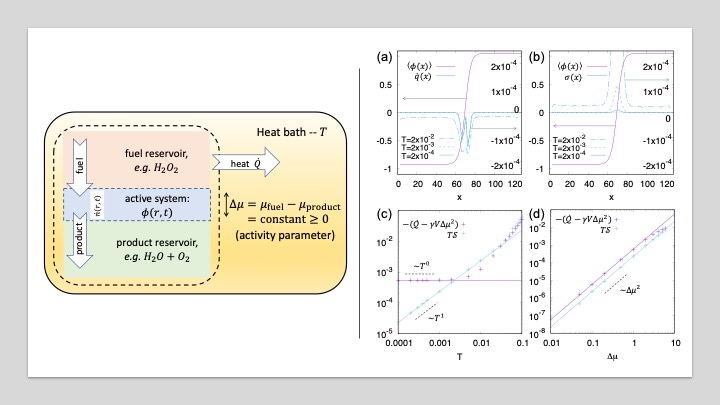
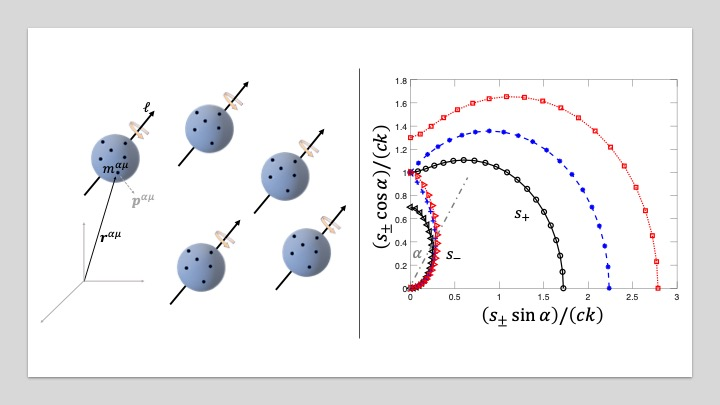
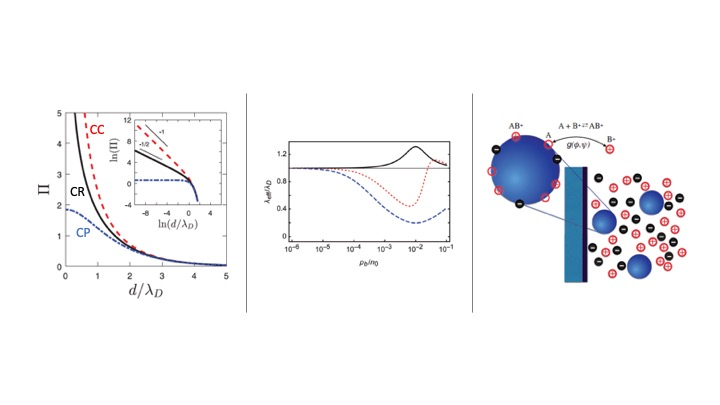
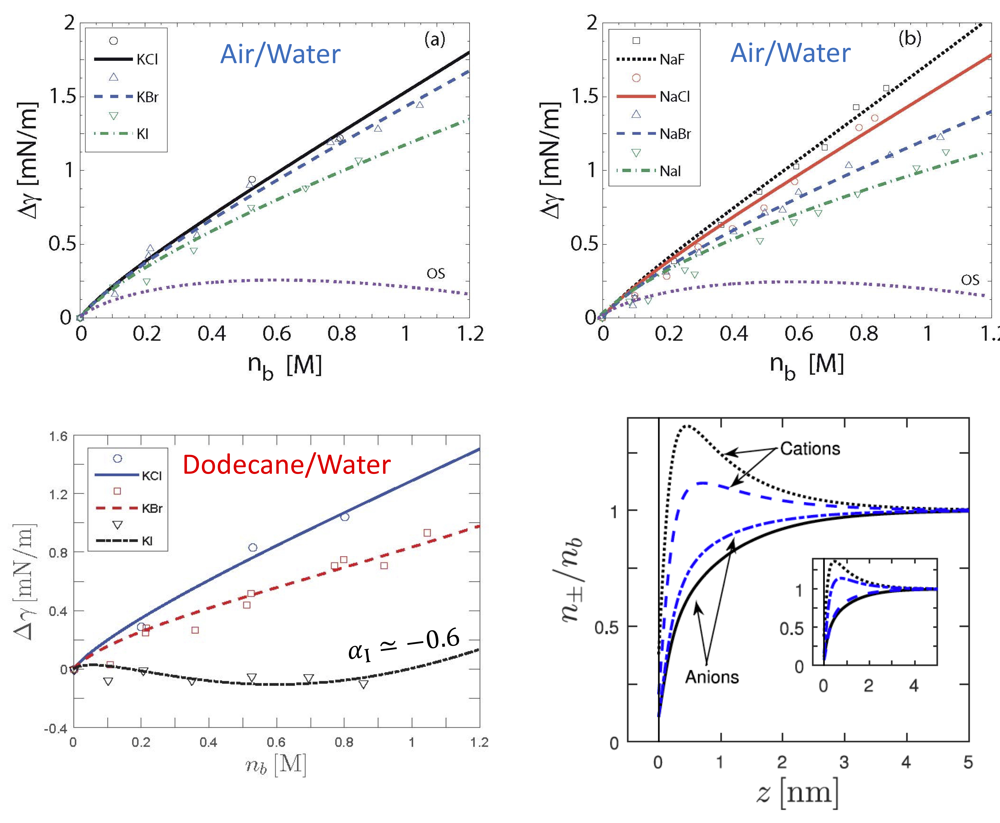

Thermodynamics of Active Matter

The hallmark of active matter is the autonomous directed motion of its microscopic constituents driven by consumption of energy resources.
This motion leads to the emergence of large-scale dynamics and structures without any equilibrium equivalent.
Morevoer, as long as the material is active, it never achieves equilibrium and, therefore, cannot be understood within usual thermodynamics.
Can we extend thermodynamics concepts to active systems? In our group we are trying to answer this question.
In the past decade large progress was made in this direction using the tools of "stochastic thermodynamics",
with which the first and second laws were extended to be applicable for particles out of equilibrium.
We have recently showed that the second law can be further extended to more general cases in which even Einstein relation breaks.
Of specific interest are active field theories that offer a useful hydrodynamic description for the collective motion of active materials,
but may lose connection to the microscopic mechanics and energetics.
It is thus unclear how to properly quantify the energetic cost of the dynamics from such a coarse-grained description.
We have recently found a way to extend the first law of thermodynamics to active field theories.
To do so we evaluated the rate of heat dissipated to the thermostat as a measure of the cost to sustain the system away from equilibrium,
and found its relation with the `informatic’ entropy production rate that measures the irreversibility of the active field dynamics.
Once heat is identified, we study other extension of thermodynamics, such as how to optimally (with minimal energy loss) change the system's state.
This can open a path to the design of materials that can alter their properties due to minimal external stimuli.
Optimal manipulations are the first step towards design of new type of engines that can harness activity and the collective motion it entails to provide useful work,
perhaps from new sources of energy.
-
B. Sorkin, G. Ariel, and T. Markovich,
Consistent expansion of the Langevin propagator with application to entropy production ,
Submitted (2024) arXiv
-
B. Sorkin, H. Diamant, G. Ariel, and T. Markovich,
Second Law of Thermodynamics without Einstein Relation,
Accepted to Phys. Rev. Lett. (2024) arXiv
-
M. E. Cates, É. Fodor, T. Markovich, C. Nardini, and E. Tjhung,
Stochastic Hydrodynamics of Complex Fluids: Discretisation and Entropy Production,
Entropy, 24(2), 254 (2022) arXiv
-
T. Markovich, É. Fodor, E. Tjhung, and M. E. Cates,
Thermodynamics of Active Field Theories: Energetic Cost of Coupling to Reservoirs,
Phys. Rev. X, 11, 021057 (2021) arXiv
Chiral Active Matter

Chiral active materials are composed of complex components that break both parity and time-reversal-symmetry at the microscale,
which is generally a result of continuous injection of energy and angular momentum through local torques.
Realizations of such materials are found in a variety of systems across length scales, from nanoscale biomolecular motors, actomyosin networks, and
microscale active colloids, to starfish embryos and macroscale-driven chiral grains.
These materials shows remarkable mechanical properties.
For example, we have found that because torques are complex objects (a point-like particle cannot rotate)
the basic elements of chiral activity are not unique in the sense that different basic elements show significant variation of macroscopic effects.
Even more interesting mechanical properties are:
(i) “odd viscosity” (sometime called Hall viscosity), which, unlike standard viscosity that arises from particles friction and dissipates sheared
motion into heat, is non-dissipative. It is more like a solid elastic rigidity, but with non-reciprocal
properties.
(ii) The complementary “odd elasticity”, which is a similar non-reciprocal elastic response in chiral active solids.
A generic chiral active viscoelastic material will have both odd viscosity and odd elasticity, together with the regular viscoelasticity.
We study both the origins of these unique mechanical properties, and their affect on the material's mechanical properties.
Recently, we have presented a microscopic Hamiltonian theory for odd viscosity in both 2D and 3D using the Poisson-bracket approach,
showing that the odd viscosity coefficient is related to the internal angular momentum of the fluid molecules.
The mere appearance of an internal angular momentum breaks Onsager’s reciprocity relations and leads to a non-Hermitian dynamical matrix.
When interactions are included phenomenologically, there are regions in the parameter space in which novel 3D mechanical waves propagate
in the bulk and regions in which they are mechanically unstable.
The boundaries separating these regions are continuous lines of exceptional points,
suggesting a new type of phase transition called "non-reciprocal phase transition".
Current projexts in the group focus on extending our theory to generic viscoelastic materials, showing the origins and phenomenology of "odd viscoelasticity",
and on the topological nature of odd viscosity and odd elasticity.
-
T. Markovich and T. C. Lubensky
Nonreciprocity and odd viscosity in chiral active fluids,
Proc. Natl. Acad. Sci. U.S.A., 121(19), e2219385121 (2024) arXiv
-
T. Markovich and T. C. Lubensky
Odd Viscosity in Active Matter: Microscopic Origin and 3D Effects,
Phys. Rev. Lett., 127, 048001 (2021) arXiv -
T. Markovich, E. Tjhung, and M. E. Cates
Chiral active matter: microscopic `torque dipoles' have more than one hydrodynamic description,
New J. Phys. Fast Track Communication, 21, 112001 (2019) arXiv
Biological Gels

Biological gels appear both in the extracellular matrix and in the cytoskeleton that is crucial for cell mechanics (e.g. cell division). Activity in the former originate in cells, while in the latter molecular motors such as myosin pulls/walk on the polar filaments. Many biological systems, such as bacterial suspensions and actomyosin networks, form polar liquid crystals on long time-scales. We study the mechanics and thermodynamics of such active polar liquid crystals. For instance, we introduced a novel shear-elongation parameter that capture changes in the magnitude of the polar order parameter under flow. This shear-elongation parameter is responsible for a shear-induced first-order phase transition from an isotropic to a polar phase, and significantly changes the rheological properties of both active and passive polar fluids: The apparent viscosities can be nonmonotonic, and even negative. Relating to thermodynamics, we showed that the negative viscosity regime corresponds to active work done by the fluid on the boundaries, such that the active polar liquid crystals can serve as an autonomous engine that extarct work. In many cases the source of activity is chiral; since forcing is internally generated, some sort of `torque dipole' is then present locally. For example, in bacteria such as E. coli, the flagellar bundle tends to rotate the fluid anticlockwise, whereas the body tends to rotate the fluid clockwise. We have proposed a general theory to account for chiral activity in polar fluids. Importantly, we discovered that there is no unique hydrodynamic description for such a fluid in the presence of torque dipoles of a given strength. Instead, at least three different hydrodynamic descriptions emerge, depending on whether we decompose each torque dipole as two point torques, two force pairs, or one point torque and one force pair where point torques create internal angular momenta of the chiral bodies (spin), whereas force pairs impact center of mass motion that contributes to fluid velocity. Remarkably, we find a direct contribution of chiral activity to the equation of motion for the polar order parameter. Hence, unlike achiral activity (e.g. force dipole), chiral activity survives even in `dry' (without momentum conservation) active systems where the fluid velocity is set to zero. We study the microscopic origins of the shear-elongation parameter as well as the consequences of the various microscopic active chiral components on the pattern formation in both `dry' and `wet' polar liquid crystals.
-
S. Chen, C. P. Broedersz, T. Markovich, and F. C. MacKintosh
Nonlinear stress relaxation of transiently crosslinked biopolymer networks,
Phys. Rev. E, 104, 034418 (2021) arXiv
-
S. Chen, T. Markovich, and F. C. MacKintosh
Motor-Free Contractility in Active Gels,
Phys. Rev. Lett., 125, 208101 (2020) arXiv
-
T. Markovich, E. Tjhung, and M. E. Cates,
Chiral active matter: microscopic `torque dipoles' have more than one hydrodynamic description,
New J. Phys. 21, 112001 (2019) arXiv -
T. Markovich, E. Tjhung, and M. E. Cates,
Shear-Induced First-Order Transition in Polar Liquid Crystals,
Phys. Rev. Lett. 122, 088004 (2019) arXiv
Charge Regulation

Charge colloidal particles do not usually conform to the simple and popular idea that they can be characterized either as insulators with fixed surface charges or conductors with constant surface potential. In fact, when two colloidal particles with ionizable surface groups (immersed in an aqueous electrolyte solution) are brought together, both their surface charge density and surface electrostatic potential change with the particle (surface) inter-distance. This ubiquitous phenomenon stems from the dissociation/association of surface ionizable groups and is referred to as charge regulation (CR). It was elegantly formalized within the Poisson-Boltzmann theory of electrostatic interactions by Ninham and Parsegian in the 1970s. Although widely used in literatue, some conceptual aspects of CR have not been addressed. We have shown that CR macromolecule is fundamentally different from an insulator or conductor and disproved the common paradigm of CR being a generalization of these two common cases. In the standard framework of CR processes, the dissociable moieties are confined to fixed bounding macromolecular surfaces. We extended the current treatment and formulated a collective description for many mobile CR macromolecules finding notable consequences such as non-monotonic screening length and buffering.
-
Y. Avni, T. Markovich, R. Podgornik, and D. Andelman,
Charge regulating macro-ions in salt solutions:
screening properties and electrostatic interactions,
Soft Matter, 14, 6058 (2018) arXiv -
T. Markovich, D. Andelman, and R. Podgornik,
Complex Fluids with Mobile Charge-Regulating Macro-Ions,
EPL, 120, 26001 (2017) arXiv -
T. Markovich, D. Andelman, and R. Podgornik,
Charge regulation: a generalized boundary condition?,
EPL, 113, 26004 (2016) arXiv
Ionic Specific Effects: Surface tension and bulk properties of electrolyte solutions

Ionic-specific effects date back to the late 19th century when Hofmeister measured the amount of protein precipitation from solution in presence of various salts and found a universal series of ionic activity. The same Hofmeister series emerges in a large variety of experiments in chemical and biological systems. Among others, they include forces between mica and silica surfaces, and the surface tension at the air/water and oil/water interfaces. This over century old Hofmeister puzzel is still not completely understood. The classical work of Onsager and Samaras uses the image-charge interaction to calculate the surface tension of an electrolyte solution. We have proposed a phenomenological self consistent approach that unites the Onsager-Samaras result with the ionic specificity of the Hofmeister series. Our analytical results gives further predictions for the microscopic ionic profiles close to the air/water and oil/water interfaces. We also study the effects of ion specificity, including the possible formation of Bjerrum pairs, on bulk properties of electrolyte solutions such as the effective dielectric constant.
-
R. M. Adar, T. Markovich, A. Levy, H. Orland, and D. Andelman,
Dielectric constant of ionic solutions: Combined effects of correlations and excluded volume,
J. Chem. Phys., 149, 054504 (2018) arXiv -
R. M. Adar, T. Markovich, and D. Andelman,
Bjerrum Pairs in Ionic Solutions: a Poisson-Boltzmann Approach,
J. Chem. Phys., 146, 194904 (2017) arXiv
-
T. Markovich, D. Andelman, and R. Podgornik,
Surface Tension of Acid Solutions: Fluctuations beyond the Nonlinear Poisson–Boltzmann Theory,
Langmuir 33, 34 (2016) arXiv -
T. Markovich, D. Andelman, and H. Orland,
Ionic profiles close to dielectric discontinuities: Specific ion-surface interactions,
J. Chem. Phys. 145, 134704 (2016) arXiv -
T. Markovich, D. Andelman, and R. Podgornik,
Surface tension of electrolyte interfaces: Ionic specificity within a field-theory approach,
J. Chem. Phys., 142, 044702 (2015) arXiv -
T. Markovich, D. Andelman, and R. Podgornik,
Surface tension of electrolyte solutions: A self-consistent theory,
EPL, 106, 16002 (2014) arXiv